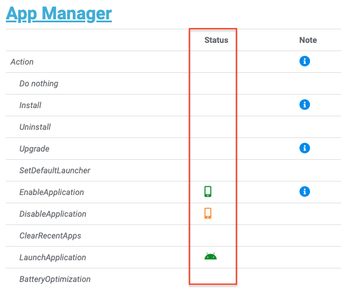

Overview
The MX Management System (MXMS) is an XML-based communication framework that provides a common interface for managing the capabilities and behaviors of Zebra Android devices. The XML documents used by the framework conform to the Open Mobile Alliance specification for Client Provisioning (OMA-CP) and the Microsoft MSPROV DTD format on which it's based (read more). The framework affords developers and administrators an extensible, efficient, reliable and scalable means to configure and administer devices in their organization. MXMS exposes capabilities provided by the underlying CSPs on a device, which provide uniform access to privileged and unprivileged APIs. Each CSP exposes its capabilities using DSD files included with the MDM Toolkit. A DSD tool, loaded with the DSD files for a particular device or set of devices, can generate XML code that when sent to the MXMS running on the device, can change the devices' configuration and/or behavior.
Android 11 Transition
The Zebra OS architecture for Android devices is undergoing a major transformation. This is accordance with Google-mandated changes to device security and data privacy, as well as platform enhancements Zebra is developing to reduce proprietary technologies and help ensure a smooth transition. While many of the changes are transparent, actions will be required for most customers and partners either now or in the near future, particularly for data persistence and for apps that share and/or use shared data.
Zebra has selected Android 11 as the "transitional" OS version. Zebra devices running Android 11 will accept current and future methods of device configuration. This is intended to allow organizations to continue using their present staging methods while gradually transitioning to the new ways being introduced. Learn more. Zebra devices running Android 13 WILL accept XML for staging, and most MX features will be available in devices moving forward. The following key defines how access to the remaining features has changed for devices running Android 13 (and later).
Queries are not supported on Zebra devices running Android 11 or later.
MX Feature Disposition
The disposition of each MX parameter and option is indicated with an icon in the Status column of the MX Feature Matrix (see image, below). Parameters with no icon can be configured as normal, using Zebra StageNow or Zebra OEMConfig and a company's own Enterprise Mobility Management (EMM) system. Newly created StageNow Profiles will automatically output the barcode type appropriate for the MX version selected in the StageNow desktop tool. Profiles created with StageNow 5.4 or earlier can be opened with StageNow 6.0 and exported to the new format for targeting devices running Android 13 or later.
 An icon in the 'Status' column indicates whether (and how) each MX parameter or option is changing.
Feature dispositions and the corresponding icons are explained below. Hovering over an icon displays a brief explanation of its meaning. Clicking an icon links to this page.
Icon Key
On devices running Android 13 or later:
– (No icon) Feature available now and in the future with no change required to apps. Existing StageNow Profiles require conversion to new format to target devices with Android 13 (or later).
– Feature available ONLY through Managed Configurations. Deprecated in MX 11.
– Feature available only through eXML barcode(s) or .bin file(s) generated by StageNow.
– Feature accessible ONLY through Android system APIs. Deprecated in MX 11.
– Feature accessible through StageNow and OEMConfig (via EMM), and sometimes also through Android system APIs, as noted. Deprecated in MX 11.
– Feature accessible ONLY through Android Device Policy Manager (DPM) APIs. Deprecated in MX 11, discontinued in MX 14.
– Feature accessible through StageNow and/or OEMConfig (via EMM), or through Android Device Policy Manager (DPM) APIs.
– Feature MIGHT be limited by Scoped Storage for apps targeting API 30 (Android 11) and later.
– Feature also can be implemented using Delegation Scopes through StageNow and/or OEMConfig.
– Feature not available in devices running Android 13 or later. Deprecated in MX 11.
Color Key
– DARK GREEN - App changes NOT required; existing StageNow Profiles require conversion to new format.
– LIGHT GREEN - App changes MIGHT be required; feature implemented through MX or Android system APIs.
– ORANGE - Changes ARE required for apps and for StageNow Profiles and/or OEMConfig steps.
– RED - Feature discontinued on devices running Android 13 and later.
What Comes Next?
Scoped Storage
Introduced with Android 10 (API level 29), scoped storage was originally intended to provide more user control over stored files and reduce the clutter that often occurs on external device storage over time. It limits apps targeting API 29 (and later) to an app-specific device folder and to media types it creates. In practical terms, scoped storage could limit or prevent an app from accessing device folders formerly available, including the /enterprise partition on Zebra devices. Enhancements delivered with Android 11 (API level 30) enforce greater protections on app and user data stored externally. For more information, see Scoped Storage in the FAQ.
From the Android Development Community:
- Android 11 Storage Overview | Changes introduced with Android 11 and their effect on apps
- Storage Use Cases and Best Practices | Help preparing apps for scoped storage
- Android Storage Overview | The basics of Android data and file storage
Managed Configurations
Part of Zebra's process for modernizing its mobile OS strategy has been to evaluate the features currently in MX and to implement them as Managed Configurations whenever possible. Many hundreds of features can already be accessed through Zebra OEMConfig and though major EMM systems using Zebra's OEMConfig schema. This method will remain in place for the foreseeable future. Aside from OEMConfig, Zebra is enhancing its other apps–including DataWedge, Device Central and Workstation Connect–to be configurable through schema of their own.
Learn more about Zebra OEMConfig.
XML Enhanced
Legacy MX performed app and device configuration tasks using Zebra-specific XML, as generated by Zebra's StageNow and EMDK desktop tools. Zebra devices running Android 11 and Android 13 (and later) can process legacy XML and the new eXML format (sometimes seen as "JS" format) for making configuration changes. The latest version of StageNow can generate eXML (as well as legacy XML) for configuring Zebra devices and apps.
Learn more about Zebra's new device architecture.
Also See
- The MX Feature Matrix | Disposition of all MX parameters and options indicated by the icons above
- The Android 11 transition guide | Transition guide, architectural diagrams, FAQ, timeline
Version History
The following section lists the major features and enhancements added to the MX versions indicated.
Added in MX 14.0
Supported only on devices running Android 13 or later.
- Access Manager adds the ability to:
- Individually control device-user access to Accessibility and Network settings in the Android Settings panel.
- App Manager adds the ability to:
- Use the App Feature parameter to automatically launch an app or reboot the device after installation.
- Bluetooth Manager adds the ability to:
- Set individual Bluetooth Profiles as active or inactive.
- Cellular Manager adds the ability to:
- Automatically switch to a secondary SIM if the primary SIM loses service.
- Configure Device Mode as voice-centric or data-centric based on its primary intended usage.
- Set a SIM slot for Device Mode according to primary intended usage.
- DevAdmin adds the ability to:
- Add a Secondary Keyguard to work in addition the Android lock screen.
- Automatically reboot after installation of a Secondary Keyguard.
- Display Manager adds the ability to:
- Control the Secondary Monitor Auto-rotation when a device is placed in a cradle connected to a monitor.
- KeyMapping Manager adds the ability to:
- Configure Double-trigger Mode to launch an app or activity.
- License Manager adds the ability to:
- Perform licensing actions on non-legacy Zebra licenses.
- Perform device licensing actions based on License Action type.
- Perform feature licensing based on Server Type.
- Power Manager adds the ability to:
- Wake on Touch of the device screen to emerge from a low-power state.
- UI Manager adds the ability to:
- Select a Navigation Method for switching between screens on a device.
- Control Color Inversion on the device.
- Control TalkBack feature, which speaks words displayed on the device screen.
- Wi-Fi adds the ability to:
- Enable Restricted Tethering, which controls whether the device can share its internet connection when "tethered" to other devices via Bluetooth, USB or through a Wi-Fi hotspot.
MX 14.0 features are supported by StageNow 5.15 and later.
Added in MX 13.5
Supported only on devices running Android 11 or later.
- App Manager adds the ability to:
- Manage app widgets through the App Feature Action parameter.
- Audio Manager adds the ability to:
- Control the state of the device microphone, which controls audio input through the built-in mic on the device.
- Bluetooth Manager adds the ability to:
- Select the Power Class on a device to help balance Bluetooth range with battery life.
- Display Manager adds the ability to:
- Set the External Monitor Orientation to use when auto-rotation is disabled.
- Configure an external monitor to automatically set optimal resolution based on its native capabilities.
- Schedule a screen saver to automatically activate on specified day(s) and time(s).
- UI Manager adds the ability to:
- Select an auto-fill service to use when automatically filling in text fields.
Added in MX 13.4
Supported only on devices running Android 11 or later.
- Battery Manager adds the ability to:
- Place a device in Shelf Mode, which reduces power consumption for storage or extended periods of inactivity.
- Bluetooth Manager adds the ability to:
- Designate apps to allow or block from performing certain operations.
- Filter BLE scan results based on a Received Signal Strength Indicator (RSSI) range.
- Maintain BLE scanning filters for easy deployment based on use case.
- Power Manager adds the ability to:
- Allocate device storage for use as system RAM.
- UI Manager adds the ability to:
- Select a third-party camera app to use for capturing images.
MX 13.4 features are supported by StageNow 5.14 and later.
Added in MX 13.3
Supported only on devices running Android 11 or later.
- DevAdmin adds the ability to:
- Control Android Lock Screen visibility on the remote console if the Lock Screen appears on a device while being remotely controlled.
- Display Manager adds the ability to:
- Select screen resolution on the secondary display when a device is connected to an external monitor through a Zebra Workstation Cradle.
- Ethernet Manager adds the ability to:
- Set the authentication type when configuring a network connection.
- Enter the user name when configuring a network connection.
- Enter the password when configuring a network connection.
- Enter the domain name when configuring a network connection.
- Enter a mandatory client certificate to validate a user on a network.
- Enter an optional CA certificate to validate a server on a network.
- KeyMapping Manager adds the ability to:
- Set the key identifier of the clip-mount button, an accessory for the WS50 wearable computer.
- Set the keycode of the clip-mount button, an accessory for the WS50 wearable computer.
- UI Manager adds the ability to:
- Control whether to display the remote-control icon in the Status Bar when the device is being remotely controlled or viewed.
MX 13.3 features are supported by StageNow 5.13 and later.
Added in MX 13.2
Supported only on devices running Android 11 or later.
- Audio Manager adds the ability to:
- Control whether to show/hide vibration icon on the Status Bar, which indicates whether the device vibrates when Notifications are received.
- Audio Volume UI Manager adds the ability to:
- Control whether to allow the device user to show/hide the vibration icon on the Status Bar of the device.
- Cellular Manager adds the ability to:
- Controls configuration of the 5G New Radio.
- Configure Voice Over LTE settings with a JSON file.
- UI Manager adds the ability to:
- Control Large-screen Taskbar usage, which displays recent and pinned apps, plus a link to the app library.
- Control usage of the Active App List UI in the Notification panel on the device, potentially allowing the user to terminate apps running on the device.
- Identify external keyboard names using wildcard characters.
- USB Manager adds the ability to:
- Control MTP folder write access to
Android/dataandAndroid/obbfolders on the device when Media Transfer Protocol is used.
- Control MTP folder write access to
MX 13.2 features are supported by StageNow 5.12 and later.
Added in MX 13.1
Supported only on devices running Android 11 or later.
- Access Manager adds the ability to:
- Pre-grant, pre-deny or defer to the user access to "Dangerous Permissions."
- Allow the Android system to automatically control permission to seldom-used apps.
- Green Mode Manager is a
new CSPthat allows administrators to schedule power to be supplied to certain parts of the device to help minimize energy consumption. - Power Manager adds the ability to:
- Turn off the power on a device.
- Set Recovery Mode Access to features that could compromise a device.
- Select whether to display Upgrade and Downgrade actions for selection while the device is in Recovery Mode.
- UI Manager adds the ability to:
- Turn on/off Do Not Disturb mode on a device.
- Enable/disable Inter-app Sharing on a device.
- Enable/disable configuration of Accessibility options, which can help simplify device usage for those with physical and/or visual impairments.
- Show/hide Immersive Mode pop-up warning.
- Configure Touch-and-Hold Delay for key long-presses.
- Wi-Fi adds the ability to:
- Allow an administrator to select the FTM Intervals, a preference for the frequency of updates to the Fine Timing Measurement Location on a device.
- Enable Secure Advanced Logging, which encrypts Wi-Fi Advanced logs and imposes a user-specified password for log access.
MX 13.1 features are supported by StageNow 5.11 and later.
Added in MX 11.9
Supported only on devices running Android 11 or later.
- Access Manager adds the ability to:
- Grant permission to some Zebra apps to read app logs.
- Cellular Manager adds the ability to:
- Block incoming and/or outgoing calls
- Override call blocking after an emergency call from the device
- Enterprise Keyboard Manager adds the ability to:
- Allow an administrator to enter a custom language to be used by Enterprise Keyboard.
- Network Connection Manager is a
new CSPthat allows an administrator to set preferences for connecting to cellular (WWAN) and Wi-Fi (WLAN) networks to help ensure that devices use the optimal network at all times. - UI Manager adds the ability to:
- Create Workflows to auto-launch one or more apps.
- Allocate screen-sharing percentage for Workflow apps.
MX 11.9 features are supported by StageNow 5.10 and later.
Added in MX 11.8
Supported only on devices running Android 11 or later.
- Clock adds the ability to:
- Allow an administrator to set a sync threshold, specifying the maximum difference between the time on the device clock and that of its selected NTP server.
- Touch Manager adds the ability to:
- Set the Touch and Hold Delay required for a key-press to be considered a long-press.
MX 11.8 features are supported by StageNow 5.9 and later.
Added in MX 11.7
Supported only on devices running Android 11 or later.
- Access Manager adds the ability to:
- Control System Settings access to accessibility features.
- Cellular Manager adds the ability to:
- Select from a list of Network Modes and assign preferred network types to a SIM slot.
- UI Manager adds the ability to:
- Control use of device volume Up/Down buttons to toggle TalkBack, which vocalizes words on the device to aid the visually impaired.
MX 11.7 features are supported by StageNow 5.9 and later.
Added in MX 11.6
Supported only on devices running Android 11 or later.
- Audio UI Volume Manager adds the ability to:
- Control mute/vibrate usage, which limits the device user's ability to turn the features on and off.
- Battery Manager adds the ability to:
- Set Charging Mode to schedule days and times to fully charge a device.
- Specify a Maximum Charge percentage for a device battery.
- UI Manager adds the ability to:
- Configure an external keyboard num-lock key and assign shortcut actions.
- USB Manager adds the ability to:
- Configure USB Host Mode with rules for connecting peripherals without prompting the device user, for granting apps permission to access peripherals and for auto-launching apps on connection.
- Wi-Fi adds the ability to:
- Control whether to mandate a server certificate and whether the device user is permitted to bypass validation when configuring a network in the Android Settings panel.
- Select the certificate Action to use system certs or user-installed certs.
MX 11.6 features are supported by StageNow 5.8 and later.
Added in MX 11.5
Supported only on devices running Android 11 or later.
- Access Manager adds the ability to:
- Control permission to bind the notification listener, the Android service that receives system calls relating to notifications.
- Bluetooth Manager adds the ability to:
- Select the default set of peripherals to consider when the device evaluates Silent Pairing Rules created with the Remote Device Action parameter.
- DevAdmin adds the ability to:
- Control installation notifications when the Device Owner installs, uninstalls or upgrades apps.
- Enterprise Keyboard Manager adds the ability to:
- Display the microphone tab for selecting voice input.
- Select the microphone tab as the Preferred Tab whenever EKB is invoked.
- Control the keyboard width and keyboard height when the soft input panel is displayed on an external monitor.
- Hosts Manager adds the ability to:
- Set a Device Name for a device to simplify identification by apps, device users, administrators, etc.
- SD Card Manager adds the ability to:
- Control the SD Card pop-up, which prompts the device user to interact with an SD Card newly inserted into the device.
- Settings Manager adds the ability to:
- Control whether the device user can change the browser app used for viewing web pages.
- Touch Manager adds the ability to:
- Set the Device Type as 6375 platform and set Touch Modes for 6375-platform devices such as the ET40 and ET45.
- Control Haptic Feedback, which can enable a short vibration with each keypress.
- USB Manager adds the ability to:
- Control whether to allow all USB peripherals to be used when the device is in USB Host Mode or to restrict usage to peripherals as defined in Rules created by the administrator using the Custom Rules List parameter.
- Wi-Fi adds the ability to:
- Select Country codes for Azerbaijan, Bangladesh, Ghana, Gibraltar, Guernsey, Kosovo, Kyrgyzstan, Moldova, Senegal and Uganda.
- Set RF Band Selection to enable 2.4GHz and 6.0GHz bands to operate on the device.
- Select an RSSI Roaming Threshold and RSSI Delta Value to help improve the Wi-Fi user experience while roaming.
- UI Manager adds the ability to:
- Select the Role Action for the default browser app on the device.
- Wireless Manager adds the ability to:
- Control an Airplane Mode Timer, and set a length of time (in minutes) after which Airplane Mode will be automatically turned off on the device.
MX 11.5 features are supported by StageNow 5.8 and later.
Added in MX 11.4
Supported only on devices running Android 11 or later.
- Key Mapping Manager adds the ability to:
- Assign, configure and activate Double-trigger mode, which allows a key-code to be sent whenever a scan trigger is pressed twice during the specified time span.
- Power Key Manager adds the ability to:
- Show/hide the "Power Off" button on the menu that appears after long-pressing the device power button.
- Settings Manager adds the ability to:
- Control whether the device user change the app used for a given role, such as for making and taking calls.
- Touch Manager adds support for Zebra's TC53, TC58 and WS50 devices.
- UI Manager adds the ability to:
- Turn on/off the proximity sensor on the device.
- Wi-Fi adds the ability to:
- Select the 6.0GHz band to be used for device communications.
- Select 6.0GHz channels to use for communications.
- Control whether to use a Global Proxy server for all device communications.
MX 11.4 features are supported by StageNow 5.7 and later.
Added in MX 11.3
Supported only on devices running Android 11 or later.
- App Manager adds the ability to:
- Install and/or Upgrade apps from a "split" .apk file
- Select a Failure Mode, under which the device reports a failure and prevents a system Upgrade or Downgrade.
- Audio Manager adds the ability to:
- Select vibration options for incoming calls to the device
- Control user access to vibration settings
- Manage a list of devices to be excluded from consideration as the best path for media output
- File Manager adds the ability to:
- Deploy a file to an app and grant that specific app access to the file
- Select whether to persist a file locally on the device
- Key Mapping Manager adds:
- Delete (DEL) and Insert (INS) Key Identifiers
- Notification Manager adds the ability to:
- Control notifications displayed by all or selected apps
- UI Manager adds the ability to:
- Select whether to use Dark Theme, under which the Android System UI and compliant apps use black backgrounds
- Control user access to Battery Saver mode
- Edit the display and layout of Quick Tiles on a device
- Control user access to Quick Tile editing
MX 11.3 features are supported by StageNow 5.6 and later.
Added in MX 11.2
Supported only on devices running Android 11 or later.
- AudioVolumeUI Manager adds the ability to:
- Assign preset volume levels for STREAM_MUSIC for HDMI output
- AudioVolumeUI Manager deprecates the abilities to:
- Merge ring/notification and system into a single stream
- Merge Bluetooth and wired headset volume limit for Ring, Notification, System, Alarm, KVS and VVS streams
- Remove UI label, UI icon and control parameters
- Remove Receiver Volume Limit for streams (except for voice calls)
- License Manager adds the ability to:
- Persist Zebra license keys following an Enterprise Reset of the device
MX 11.2 is supported by StageNow 5.5 and later.
*Deprecated features remain available but are no longer being advanced and will be removed from a future MX version.
Added in MX 11.1
Supported only on devices running Android 11 or later.
- Bluetooth Manager adds the ability to:
- Cellular Manager adds the ability to:
- Select eSIM switch on which to perform erasure
- Reset eSIM memory or remove individual eSIM profiles
- Display Manager adds the ability to:
- Select display on which Media Projection and Key and Touch Injection operations are performed
- License Manager adds the ability to:
- Enter a named license partition from which to pull feature licenses
- Lifeguard OTA Manager adds the ability to:
- Enable/Disable automatic application of system updates and patches
- Power Manager adds the ability to:
- New Action cancels an ongoing OS upgrade or downgrade (when possible)
MX 11.1 features are supported by StageNow 5.4 and later.
Added in MX 10.5
MX 10.5 adds the following major features and enhancements:
- BeaconMgr adds the ability to:
- Enable/Disable Beaconing upon battery reinsertion into a device
- Enter a Manufacturer Byte or custom value in the beacon advertising packet
- Enter a Reference RSSI for extrapolating the relative distance to a device beacon
- DevAdmin adds the ability to:
- Choose the Lock Screen Wallpaper
- Enable or limit Lock Screen Notifications from display
- Select whether the device user receives notifications when apps are installed, uninstalled or upgraded
- Display Manager adds ability to:
- Set a Secondary Display Mode for an external monitor
- Select Allowed Orientations for a device
- Select Locked Orientation positions for a device
- Show/Hide a Lock Override button on a device
- Force Resizable Windows for an app, overriding the manifest
- Force Resizable Activities for an activity, overriding the manifest
- Intent adds the ability to:
- Enable a device sensor to trigger or cancel an intent
- Select Free-fall Detection to trigger an intent
- UI Manager adds ability to:
- Set External Keyboard Layout (language) preference
- Add or replace a Keyboard Layout (language) for an external keyboard
- Enable/Disable Clipboard Share to control off-device data sharing
- Select digital assistant app to use on the device
- Specify a custom digital assistant app to use on the device
- Select a Home Screen Wallpaper
MX 10.5 features are supported by StageNow 5.3 and later.
Added in MX 10.4
MX 10.4 adds the following major features and enhancements:
- Access Manager adds ability to:
- Grant installed apps permission to access USB and/or SD card storage
- "Pre-grant" or "pre-deny" USB/SD card storage permission to apps yet to be installed
- Battery Manager adds ability to:
- Set Charging Mode to optimize for device runtime or overall battery life (limited device support)
- Key Mapping Manager adds:
- Key Identifiers for "CL" and "FN" and "NAV_OK" keys found on some devices
- Touch Manager adds:
- Support for EC50, EC55, MC2200, MC2700, MC33ax, MC3300x, TC26, TC52ax, TC57x
- USB Manager adds:
- Control of Default Client Mode of the USB port when connecting with a host PC
- Wireless Manager adds:
- Control of the state of Bluetooth scanning, Wi-Fi scanning and the Location Service
MX 10.4 features are supported by StageNow 5.2 and later.
Added in MX 10.3
MX 10.3 adds the following major features and enhancements:
- New App Manager feature:
- Allow/Disallow individual app upgrades
- New Bluetooth Manager feature:
- Erase all data about paired peripherals on device
- New DHCP Option Manager feature:
- Select between DHCPv4 and DHCPv6 clients on device (or use both)
- New NFC Manager feature:
- Enable/Disable logging of NFC events on device
- New WorryFree Wi-Fi Manager feature:
- Minimum password and temporary password length increased to eight (8) characters
MX 10.3 features are supported by StageNow 5.1 and later.
Added in MX 10.2
MX 10.2 adds the following major features and enhancements:
- New Access Manager features:
- Enter the Token received from a caller
- New Beacon Manager CSP:
- Controls Bluetooth Low Energy beacon on mobile computers
- New Bluetooth Manager features:
- Configure single pairing of accessories
- Define trusted devices
- Enhancements to silent pairing rules
- New Clock features:
- Enter date and time in local or Universal Coordinate format
- New Display Manager features:
- Control automatic screen rotation
- Enable/disable adaptive brightness
- Set device brightness level
- New KeyMapping Manager features:
- Support for additional key codes
- New License Manager features:
- Supports URI-based license sources
- New Power Manager features:
- Enable/disable/configure battery saver options
- New PowerKey Manager features:
- Set touch mode options
- New Touch Manager features:
- Support and control latest Zebra devices
- New UI Manager features:
- Show/hide percentage of battery charge on screen
- New Wi-fi features:
- Configure Fine Timing Measurement
- Control encryption options
Added in MX 10.1
MX 10.1 adds the following major features and enhancements:
- Enhanced Display Manager now allows an admin to:
- Control device-screen orientation (automatic rotation on/off)
- Enhanced File Manager now allows an admin to configure the following file upload actions:
- Enter a target URI
- Enter source path and file name
- Select the upload order (oldest or newest first, or alpha-sorted by file name)
- Delete source file(s) after uploading
- Name uploaded files using a naming pattern
- Replace the destination file with source if duplicate name
- Skip copying and remove file from the source
- Skip copying and keep file at the source
- Enhanced Power Manager now allows an admin to:
- Control state of Battery Saver mode (on/off)
- Control Battery Saver Control mode (automatic/manual)
- Set Battery percentage of charge to automatically turn Battery Saver Mode on
- Enhanced UI Manager now allows an admin to:
- Control Battery Percentage display in status bar (show/hide)
Added in MX 10.0
MX 10.0 adds the following major features and enhancements:
- Enhanced Power Manager now allows an admin to:
- OS Upgrade via streaming (full-package upgrade only using http or https; supported on Android 10 and later)
- OS Downgrade via streaming (full-package downgrade only using http or https; supported on Android 10 and later)
- Enhanced Access Manager now allows an admin to:
- Auto-grant permissions to an app to prevent permission "pop-up" to appear on device
- Designate a CSP as "Protected" from unauthorized use
- Designate a Function Group (features selected from different CSPs) as "Protected" from unauthorized use
Added in MX 9.3
- Enhanced File Manager now allows an admin to:
- Download a file or files from a redirected URL (i.e. Tiny URL)
- Download a file from multiple redirected URLs
- Enhanced App Manager now allows an admin to control background data usage on a per-application basis.
- Enhanced Bluetooth Manager now allows silent pairing using a Bluetooth MAC address or PIN.
- Enhanced GPRS Manager APN parameters now support IPv4, IPv6 and the IPv4/IPv6 "dual-stack" protocol.
- Enhanced KeyMapping Manager now supports the "grey" key and W1 and W2 buttons.
Added in MX 9.2
- Enhanced Power Manager now allows an admin to control individual hardware wake up methods (buttons, keycodes)
- Enhanced Display Manager now allows an admin to control device font and display size.
- Enhanced Access Manager can now:
- Prevent one application from stopping another without explicit permission
- Perform remote device troubleshooting with enhanced visibility and control
- Enhanced Cellular Manager implements several new device locking mechanisms.
- Enhanced Keymapping Manager now supports:
- Intent extras
- "Rotate" and "minus" keys
Added in MX 9.1
- Enhanced UI Manager now allows an admin to:
- Control whether password characters are displayed briefly on the screen as they're entered (otherwise masked at all times)
- Enhanced App Manager now allows an admin to:
- Erase all data created by an app specified in the Package parameter
- Enhanced Power Manager now allows an admin to:
- Select hardware signals as the device wake-up method
- Select mappable keycodes as the device wake-up method
- Enhanced GMS Manager now allows an admin to:
- Select and enable a subset of GMS apps and services to run on a device (i.e. Chrome browser, Google Maps, Firebase Cloud messaging)
Added in MX 9.0
- Enhanced Battery Manager now allows an admin to:
- Specify a critically low battery threshold
- Enhanced UI Manager now allows an admin to:
- Control user access to the Large Key Indicator (MC93 device only)
- Turn the Large Key Indicator on or off (MC93 device only)
Added in MX 8.4
- Enhanced GPRS Manager now allows an admin to:
- Specify the Mobile Virtual Network Operator (MVNO) type for an Access Point Name (APN)
- Specify APN MVNO Match Data
- Enhanced UI Manager now allows an admin to:
- Control user access to the On-Screen Power Button
- Control user access to the Status Bar
- Enhanced Wi-Fi CSP can now enable/disable:
- Aggregated MAC Protocol Data Unit (AMPDU)
- Gratuitous ARP address resolution protocol
- 2g Channel Bonding (40MHz-wide channel in 2.4GHz band)
- Configuration of Extended WLAN settings
Added in MX 8.3
- New NFC Manager CSP adds these new capabilities:
- Enable/Disable:
- NFC radio and its ability to communicate
- NFC Data Exchange Format
- Peer-to-Peer mode
- CPU boost mode
- Card Emulation mode
- NFC usage when the Android "lock screen" is displayed
- Select type A, B, F, or V tags for use
- Select communication speed for Types A and B cards (TC55)
- Select communication speed for ISO 14443-4 cards (TC75)
- Select the Polling mode to balance performance with battery usage
- Reset device to default NFC settings
- Enhanced Access Manager adds these new features:
- Select the Action to perform for Access to Protected Services
- Specify a Service Identifier for a Service
- Specify Package Name of a Service Caller
- Specify a File name for the Signature of a Caller
- Enhanced Cellular Manager adds this new feature:
- Specify an APN authentication type
- Enhanced KeyMapping Manager added this new feature:
- Select a key behavior for 'Diamond' mode
- Enhanced Wi-Fi CSP adds this new feature:
- Enable/Disable Wi-Fi verbose logging
- Enhanced File Manager can download and expand archive files by from a local PC or a server
Added in MX 8.2
- Enhanced UI Manager adds these new features:
- Enable/disable long-press on HOME key
- Enable/disable date in Notification panel
- Enable/disable long press on Recent Apps header icon to control access to app info
Added in MX 8.1
- Enhanced Power Manager adds these new actions:
- Specify an on-device file to verify an OS update
- Specify whether to suppress auto-reboot following an A/B upgrade
- Enhanced Battery Manager adds these new actions:
- Enable/disable use of Battery Swap Mode UI
- Enable/disable “battery charging” LED
- Enhanced Bug Report Manager adds a new action:
- Specify a time before expiration (in days) to store or email bug reports or send them to the cloud
- Enhanced Cellular Manager adds these new actions:
- Enable/disable user access to public land mobile network (PLMN) a device uses
- Specify the MCC/MNC network PLMN LockSet
- Show/hide PLMN lock UI
- Determine the status of PLMN lock UI
- Enable/disable Dual SIM Standby
- Get the status of DSDS
- Enhanced DHCP Option Manager adds these new actions:
- Enable/disable requests for a custom DHCP option from server
- Request or disable a specified DHCP Option
- Enable/disable sending of a custom DHCP Option to server
- Send or disable a specified DHCP Option
- Send a value with a specified custom DHCP Option
- Enhanced License Manager adds these new actions:
- Specify an Activation ID to return a license from the device
- Specify server friendly name for returning one or all licenses and for deleting license source
- Select the license source type to be used to return one or all licenses
- Enhanced Settings Manager adds these new actions:
- Enable/disable the slide out drawer for accessing Android system settings
- Enhanced UI Manager adds these new actions:
- Enable/disable Split Screen mode
- Enable/disable Do Not Disturb mode
- Enable/disable Multi-user mode
- Enhanced Wi-Fi adds these new actions:
- Enable/disable MAC address randomization
- Enable/disable Call Admission Control
- Enable/disable user control of Hotspot state (active/inactive)
Added in MX 8.0
- Enhanced App Manager adds these new actions:
- Clear Application Cache
- Enable/disable All GMS Applications on the "Safe to Disable" list
- Enhanced License Manager adds these new actions:
- Select a licensing file to be embedded in the XML
- Select a pre-activated license source
- Query product-specific license information
- Specify product name to be queried
- Select the method used to supply the license .bin file
- Enhanced Power Manager adds a new action:
- Enable/disable PTT and scan buttons to wake the device from suspend mode
- Enhanced Settings Manager adds a new action:
- Enable/disable tethering and portable hotspot features
- Enhanced UI Manager adds these new actions:
- Enable/disable the Magnification Gesture
- Show/hide the Virtual KeyBoard while Physical Keyboard is active
- New AutoTrigger Manager CSP is used to configure automatic scan-triggering, which initiates scanning when a scan target is brought within proximity of the device sensor. Currently supports the Zebra PS20 Personal Shopper device only.
- New DeviceCentral Manager CSP allows configuration of settings on the device for Zebra Device Central, an enterprise tool for viewing connection state, battery status, firmware version and other device conditions from a central console.
- New Fota Manager CSP controls the Firmware Over The Air (FOTA) Client on the device, allowing administrators to perform OS updates on Zebra devices without a physical connection. The FOTA Client app comes preinstalled on supported devices and is configured to communicate with the Zebra update server.
See the MX Feature Matrix for complete feature lists
Definition of Terms
Android Open Source Project (AOSP)
AOSP is the method that Google uses to release and distribute the source code for the Android Operating System for royalty-free use by the open source community. OEMs are free to use, modify, and extend AOSP as needed, subject to certain standard licensing requirements. Each BSP for any of the Zebra Android devices includes an operating system that was derived--directly or indirectly--from AOSP. These BSPs also generally include modifications and/or enhancements beyond AOSP that provide additional value to Zebra customers.
Board Support Package (BSP)
A BSP is the method used by Zebra device teams to deliver the operating system for Zebra devices. Every device ships with a specific BSP version--reported via the "Build number" field--pre-installed that is suitable for use on that device model. The BSP version that ships in devices of a particular model may or may not be updated when a new BSP becomes available for that device model. A BSP generally can be updated by downloading a newer (or sometimes older) BSP from the Zebra support website and applying it to the device via the OS Update Process for that device.
Configuration Service Provider (CSP)
A CSP is a device code module that implements the ability to set and query the configuration of a subsystem on a device (e.g. Clock, Wi-Fi, etc.). The capabilities that are supported and exposed by a CSP are defined by a corresponding DSD.
A CSP is a plug-in to the MXMF which can ship as part of the MXMF, be included in a BSP along with the MXMF, or be downloaded to a device as needed. Before it can be used on a device, a CSP must be registered with the MXMF on that device and all calls to a CSP must go through the MXMF. The MXMF and CSPs communicate through XML files that conform to the XML.DTD, as described in the MX MF XML DTD document.
Document Type Definition (DTD)
A DTD is a standards-based non-XML document that defines the syntax of a class of related XML documents. It is used to enter the elements that are allowed to appear within all XML documents that are used for a specific purpose.
The following DTDs are used by the MXMF:
- XML.DTD (described in the document MX MF XML DTD)
- This DTD defines the syntax of XML Documents that can be consumed by CSPs that registered with the MXMF and that can be used to set and query the configuration of the device systems associated with those CSPs
- DSD.DTD (described in the document MX MF DSD DTD)
- This DTD defines the syntax of DSD documents that are used to define the capabilities of CSPs
Document Semantics Definition (DSD)
A DSD is an XML document that conforms to the DSD.DTD as described in the document MX MF DSD DTD, and that corresponds to and describes the capabilities of a CSP. It is used by tools to enable programmatic generation of XML that can then be consumed by a CSP. Some examples of these tools are EMDK Profile Manager, StageNow, and MDM Console.
A DSD is created and maintained by the author of a CSP and each CSP must have a corresponding DSD that must be supplied when the CSP registers with the MXMF. A CSP and its corresponding DSD should generally be produced, maintained, and distributed together.
Mobility Extensions (MX)
MX is the umbrella term used to refer collectively to the experience and configuration capabilities offered by Zebra Android devices. MX represents all the value that a BSP offers over and above that provided by the Android operating system, including:
- Changes and extensions to the Android OS (implemented by Zebra OSX)
- Value-Add features such as key mapping and threat management
- The MX Management Framework (MXMF)
- Configuration Service Providers (CSPs)
- Changes and extensions to standard applications (i.e. Settings UI, Browser, Email Client, etc.)
MX Management Framework (MXMF)
MXMF is a device subsystem that provides an interface to applications that wish to set or query the configuration of device subsystems. It does not directly implement any set or query functions, but provides a framework that supports and hosts CSPs that do so. MXMF can be built into a BSP or can be added to a BSP after a device is shipped (via a patch applied via the OS update process). Applications and the MXMF communicate through an interchange of XML files that conform to the XML.DTD, as described in the MX MF XML DTD document.
Operating System Extensions (OSX)
OSX is the term used to refer to a Zebra-proprietary implementation of changes and extensions to the standard AOSP as included in a BSP. The version of OSX in a device is the primary way to determine which changes and extensions are present in the operating system of that device. The root OSX version number always matches the root number of the Android version that it extends. For example, Android 5.x would always be extended by OSX 5.x. As a general rule, the version of OSX in a device can be changed ONLY by loading a different BSP (containing a different version of OSX) into that device using the OS update process.
MX Management System (MXMS)
MXMS is a term used to refer to the MXMF and all CSPs that are registered with the MXMF at a given point in time. It provides the ability to set and/or query the configuration of the device subsystems for which CSPs are registered with MXMF. Two types of CSPs are included:
- CSPs that are built into the MXMF, such as the CertMgr CSP
- CSPs that are built into a device and pre-registered with MXMF, such as the Wi-Fi CSP
MXMS can be thought of as "the MXMF and a collection of currently registered CSPs." Although applications submit XML to the MXMF, it is more accurate to describe the MXMS (not just the MXMF) as the entity through which applications set and/or query configuration settings.
Note: All components described above may or may not be present on a device. Specifically, MXMF and the CSPs may be absent. Therefore, some or all of the components required for the device might need to be installed before they could be configured.
Multi-user Capabilities
Zebra devices and MX support Android Multi-user capabilities with the following provisions:
- MX works only in the Primary user/profile and never in a secondary user/profile.
- If Android Multi-user mode is enabled and a secondary user is created, MX will fail if invoked in the secondary user.
- Secondary users inherit settings applied using MX in the Primary user. If a Work Profile is created (by enrolling a Profile Owner), MX fails if invoked in the Work Profile but the Work Profile inherits settings applied using MX in the Primary user's profile.
Operating System Extensions (OSX)
OSX is the term used to refer to a Zebra-proprietary implementation of changes and extensions to the standard AOSP as included in a BSP. The version of OSX in a device is the primary way to determine which changes and extensions are present in the operating system of that device. The root OSX version number always matches the root number of the Android version that it extends. For example, Android 5.x would always be extended by OSX 5.x. As a general rule, the version of OSX in a device can be changed ONLY by loading a different BSP (containing a different version of OSX) into that device using the OS update process.
MX Architecture and Data Flow
System components:
- MXMS
- MXMF
- CSPs
- Unprivileged
- Privileged
- AOSP APIs
- Unprivileged
- Privileged
- OSX APIs
- Privileged
- Core Applications
Overview

Android Device BSP

MX on Devices
The MX version on a specific device can be effected by:
- OS Updates
- EMDK for Android Device Runtime Updates
While new CSPs can be introduced with each version of MX, and pre-existing CSPs can receive new capabilities, MX updates will not generally remove or change pre-existing behaviors or capabilities unless specifically noted.
Related guides: